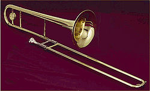

The trombone is a musical instrument in the brass family. Like all brass
instruments, sound is produced when the player’s vibrating lips (embouchure)
cause the air column inside the instrument to vibrate.
Nearly all trombones have
a telescoping slide mechanism that varies the length of the instrument to change
the pitch. Many modern trombone models also utilize a rotary valve as a means to
lower pitch of the instrument. Variants such as the valve trombone and superbone
have three valves like those on the trumpet.
The word trombone derives from Italian tromba (trumpet) and -one (a suffix
meaning "large"), so the name means "large trumpet". The trombone has a
predominantly cylindrical bore like its valved counterpart the baritone and in
contrast to its conical valved counterparts, the euphonium and the horn. The
most frequently encountered trombones are the tenor trombone and bass trombone.
The most common variant, the tenor, is a non-transposing instrument pitched in
B♭, an octave below the B♭ trumpet and an octave above the B♭ tuba.
The once
common E♭ alto trombone became less widely used as improvements in technique
extended the upper range of the tenor, but it is now enjoying a resurgence due
to its lighter sonority which is appreciated in many classical and early
romantic works.
Trombone music, along with music for euphonium and tuba, is
typically written in concert pitch in either bass or tenor clef, although
exceptions do occur, notably in almost all brass-band music where tenor trombone
is presented as a B♭ transposing instrument, written in treble clef.
A person who plays the trombone is called a trombonist or trombone player.

The trombone is a predominantly cylindrical tube bent into an elongated "S"
shape. Rather than being completely cylindrical from end to end, the tube is a
complex series of tapers with the smallest at the mouthpiece receiver and the
largest just before the bell flare.
The design of these tapers affects the
intonation of the instrument. As with other brass instruments, sound is produced
by blowing air through pursed lips producing a vibration that creates a standing
wave in the instrument.
The detachable cup-shaped mouthpiece is similar to that of the baritone horn and
closely related to that of the trumpet.
It has the venturi: a small constriction
of the air column that adds resistance greatly affecting the tone of the
instrument, and is inserted into the mouthpiece receiver in the slide section.
The slide section consists of a leadpipe, the inner and outer slide tubes, and
the bracing, or stays. Modern stays are soldered, while sackbuts (medieval
precursors to trombones) were made with loose, unsoldered stays (this remained
the pattern for German trombones until the mid-20th century).
The 'slide', the most distinctive feature of the trombone , allows the player to
extend the length of the air column, lowering the pitch. To prevent friction
from slowing the action of the slide, additional sleeves were developed during
the Renaissance, and these stockings were soldered onto the ends of the inner
slide tubes. Nowadays, the stockings are incorporated into the manufacturing
process of the inner slide tubes and represent a fractional widening of the tube
to accommodate the necessary method of alleviating friction.
This part of the
slide must be lubricated frequently. Additional tubing connects the slide to the
bell of the instrument through a neckpipe, and bell or back bow (U-bend). The
joint connecting the slide and bell sections is furnished with a ferrule to
secure the connection of the two parts of the instrument, though older models
from the early 20th century and before were usually equipped with friction
joints and no ancillary mechanism to tighten the joint.
The adjustment of intonation is most often accomplished with a tuning slide that
is a short slide between the neckpipe and the bell incorporating the bell bow
(U-bend); this device was designed by the French maker François Riedlocker
during the early 19th century and applied to French and British designs and
later in the century to German and American models, though German trombones were
built without tuning slides well into the 20th century.
However, trombonists,
unlike other instrumentalists, are not subject to the intonation issues
resulting from valved or keyed instruments, since they can adjust intonation "on
the fly" by subtly altering slide positions when necessary.
For example, second
position "A" is not in exactly the same place on the slide as second position
"E." Many types of trombone also include one or more rotary valves used to
increase the length of the instrument (and therefore lower its pitch) by
directing the air flow through additional tubing. This allows the instrument to
reach notes that are otherwise not possible without the valve as well as play
other notes in alternate positions.
Like the trumpet, the trombone is considered a cylindrical bore instrument since
it has extensive sections of tubing, principally in the slide section, that are
of unchanging diameter. Tenor trombones typically have a bore of 0.450" (small
bore) to 0.547" (large or orchestral bore) after the leadpipe and through the
slide.
The bore expands through the backbore to the bell, which is typically
between 7" and 8½". A number of common variations on trombone construction are
noted below.
History:
Etymology and synonyms:
"Trombone" is the Italian word tromba (trumpet) plus the suffix –one (big). In
other words, it means "big trumpet." The word first appears in court records in
Ferrara in 1439, when the Latin term tuba ductilis was translated "trombonus
vulgo dictus" or "trombone in the vernacular.
" The length of the trombone's tube
was not necessarily longer than that of the trumpet, but it could be made longer
by means of the slide. "Trombone" is apparently the first word that explicitly
means a slide instrument.
During the Renaissance, the equivalent English term was "sackbut." The word
first appears in court records in 1495 as "shakbusshe" at about the time King
Henry VII married a Portuguese princess who brought some musicians with her.
"Shakbusshe" is similar to "sacabuche," attested in Spain as early as 1478. The
French equivalent "saqueboute" appears a little earlier, in 1466.
The German "Posaune" long predates the invention of the slide and could refer to
a natural trumpet as late as the early fifteenth century.
Origin of the trombone:
Some time no later than the middle of the 13th century, towns began to equip
watchmen with shawms or trumpets, which they played as signals at night. Early
in the 14th century some towns started requiring the watchmen to provide music
for civic ceremonies.
The normal instrumentation for these early wind bands was
two shawms and a trumpet. Shawm technique underwent a dramatic improvement in
the middle of the 14th century. The trumpet could play too few notes to keep up.
The bands needed an improvement.
According to most musicologists, the trombone developed from the Medieval
trumpet in three steps. First trumpet makers rediscovered the ancient technique
of bending brass tubes. Two bent sections connecting three straight tubes can
result either in an S-shaped instrument, or with more stability, a loop. Second,
they discovered how to insert a slightly narrower tube inside the first "yard"
of the either of these bent trumpets so that the instrument could slide along it
and become longer.
It was this form that first received the name "trombone."
Third, some maker developed the modern U-shaped slide, in which a pair of
straight tubes connected by a bent tube move along the outside of two smaller
straight tubes. This form of trombone existed some time before 1490.
Eventually, both towns and noble courts sponsored bands of shawms and trombone.
By far the most famous and influential served the Duke of Burgundy. The
trombone's principal role was playing the contratenor part in a danceband.
The sackbut was used extensively across Europe from its appearance in the 15th
century to a decline in most places by the mid-late 17th century. It was used in
outdoor events, in concert, and in liturgical settings. Along with trumpeters,
trombonists in German city-states were even occasionally employed as civil
officials.
As officials, these trombonists were often relegated to standing
watch in the city towers but would also herald the arrival of important people
to the city. This is similar to the role of a military bugler and was used as a
sign of wealth and strength in 16th century German cities.
These trombonists
were, however, often viewed separately from the more highly skilled trombonists
who played in groups such as the alta capella wind ensembles as well as the
first "orchestra"-type ensembles that performed in religious settings such as St
Mark's Basilica in Venice in the early 17th century. Famous composers writing
for the trombone in this period include Giovanni Gabrieli and his uncle Andrea
Gabrieli, Claudio Monteverdi and Heinrich Schütz. There are also some solo
pieces written specifically for trombone in the early 17th century.
When the sackbut returned to common use again in England in the 18th century,
Italian music was so influential that the instrument became known as the
"trombone",although in some countries the same name has been applied throughout
its history, viz. Italian trombone and German Posaune.
The 17th-century trombone
was built in slightly smaller dimensions than modern trombones, and had a bell
that was more conical and less flared.
During the later Baroque period, Johann Sebastian Bach and George Friderich
Handel used trombones on a few occasions. Bach used it in some of his cantatas,
even having written for four trombones (with the extremely rare soprano trombone
playing the cantus firmus, which normally would be played on cornett).
Handel used it in the Death March from Saul, Samson, and Israel in
Egypt, all of which were examples of a new oratorio style, popular during the
early 18th century.
Distinct score notations are rare, since only a few
professional "Stadtpfeiffer" or alta cappella musicians were available
everywhere. Handel, for instance, had to import trombones to England from a
Royal court in Hanover, Germany in order to perform one of his larger
compositions. Therefore, trombone parts were rather seldom given "solo" roles
that were not substitutable with other instruments.